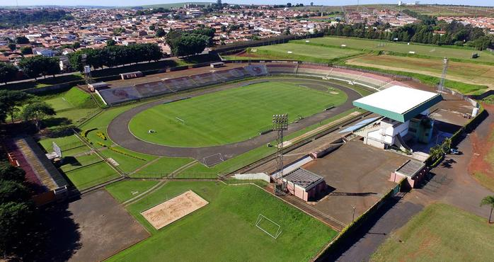
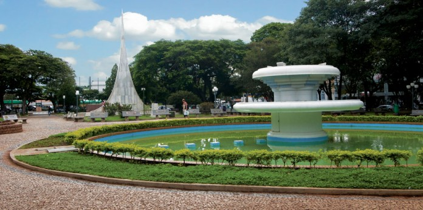
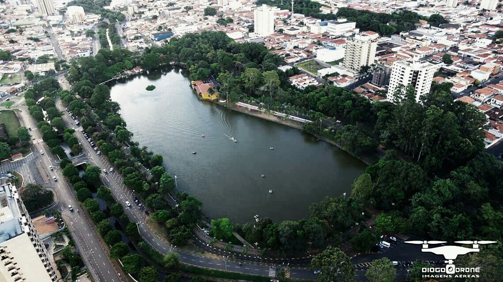

minha cidade favorita. minha cidade natal.
o Estadio união são joão foi inaugurado no dia 13 de maio de 1959 para festejar com a inauguração do novo estadio foi convidado o time S.E Palmeiras que com o primeiro jogo venceu o time do união são joão por 6 a 0 um ano depois em 1960 o time do união são joão conquistou pela primeira vez o campeonato amador do Estado de são paulo trazendo assim o primeiro titulo para a cidade de araras o união são joão faliu no dia 3 de fevereiro de 2015 por crises Finançeiras estimadas em cerca de 15 milhoes de reais assim com as dividas precisaram encerrar os treinos e logo em seguida pedindo afastamento dos campeonatos estaduais e dos campeonatos paulistas.
Criada em 1862 a praça barão de araras conhecida como o jardim publico e localizada no centro da cidade de araras a praça é um dos maiores jardins publicos que existe no pais pois o jardim apresenta uma area de 40 mil metros quadrado s a praça foi inaugurada publicamente em 1962 ou seja 100 anos depois de sua criação a praça tem o nome dedicado ao conde Bento de Lacerda Guimarães o futuro barão da cidade de araras.
o lago municipal Fábio da Silva Prado foi inaugurado em dezembro de 1963 pelo então prefeito na época milton Severino o lago ocupa um espaço de 89.000 mil metros quadrados incluindo um mini zoológico dentro dele